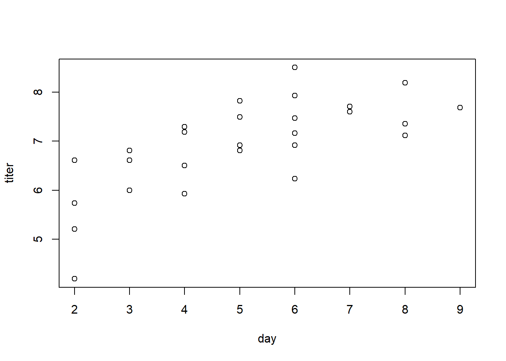

BMA / ST 590 computing companion
2023-08-23
Chapter 1 Maximum likelihood estimation
The likelihood function is the mathematical object that underlies many of the methods that we will study in this course. In this chapter, we will study the properties of the likelihood function for some simple models and data sets. We will see that the likelihood can be used to generate parameter estimates and associated measures of uncertainty (e.g., standard errors and confidence intervals). For most of the methods that we study later in this course, we will use software in which someone else has written code to analyze the likelihood function; thus we won’t have to worry about coding the likelihood function ourselves. However, it is helpful to know how to derive and analyze a likelihood function when needed, because likelihood analysis is flexible and can often be applied in specialized situations where code for a specific analysis may not already exist.
1.1 Mathematical basics
The mathematical expression for a likelihood function is identical to the mathematical expression that one would use to find the probability mass or density associated with a particular value of a random variable. For example, suppose that we have a very simple data set that consists of only one observation from a Poisson distribution. Let \(X\) denote the value of the single data point, and let \(\lambda\) denote the parameter of the Poisson distribution. In a probability class, we learn that we can find the probability mass associated with any particular value of \(X\) using the formula
\[
\mathrm{Pr}\!\left\{X=x; \lambda\right\} = \dfrac{e^{-\lambda} \lambda^x}{x!}.
\]
In R, we can access this probability mass function using the dpois function. For example, if we wanted to find the probability mass associated with \(X=1\) when \(\lambda = 1.5\), we could use
dpois(x = 1, lambda = 1.5)## [1] 0.3346952In likelihood analysis, we use the same mathematical expression for the probability mass function (pmf) of a data set, but we change our perspective. Instead of regarding the parameter as a known quantity and computing the probability associated with various possible values for the data, in likelihood analysis we regard the data as the known quantity and evaluate the same mathematical expression for different parameter values. In notation, this logic translates into an expression that we can write as \[ \mathcal{L}\!\left(\lambda; x\right) = \mathrm{Pr}\!\left\{X=x; \lambda\right\}. \] where we have used \(\mathcal{L}\!\left(\lambda; x\right)\) to denote the likelihood function for \(\lambda\) when we have a data set with value \(x\). The expression above seems strange, because nothing seems to be happening; we are simply taking the same mathematical expression and calling it two different things depending on the context. But that is all there is to it, at least with regard to constructing the likelihood function.
Because a likelihood function uses the same mathematical formulas as a probability mass function, we can use the same functions that R provides for computing probability masses for discretely valued data (or probability densities for continuously valued data) to compute the a likelihood function. Let’s return to our simple example of observing a single observation from a Poisson distribution. Suppose that observation is \(X=2\). We can use the dpois function to evaluate the likelihood for this single observation. For example, we can evaluate the likelihood at \(\lambda = 1.5\):
dpois(x = 2, lambda = 1.5)## [1] 0.2510214Or we could evaluate the likelihood at \(\lambda = 2\) or \(\lambda = 2.5\):
dpois(x = 2, lambda = c(2, 2.5))## [1] 0.2706706 0.2565156Now let’s evaluate the likelihood at a sequence of \(\lambda\) values:
my.lhood <- function(lambda) dpois(x = 2, lambda = lambda)
curve(my.lhood, from = 0, to = 5,
xlab = expression(lambda),
ylab = "Likelihood")
We might guess that the likelihood is maximized at \(\lambda = 2\). We’d be right, as the plot below suggests.
curve(my.lhood, from = 0, to = 5,
xlab = expression(lambda),
ylab = "Likelihood")
abline(v = 2, col = "red")
1.2 Horse-kick data
Most real data sets contain more than a single observation. Here is a data set that we can use to illustrate maximum likelihood estimation with a single parameter. Famously, Ladislaus van Bortkewitsch (1868 – 1931) published how many members of the Prussian army were killed by horse kicks in each of 20 years, for each of 14 army corps. In this analysis, we will ignore both the temporal structure and the grouping among corps and treat the data as just a simple random sample1 from a Poisson distribution with \(n=280\) data points. As a caveat, these data are often used to illustrate the Poisson distribution, as we will use them. They match the Poisson distribution more neatly than we might expect for most data sets.
First import the data. Note that the path name used here is specific to the file directory that was used to create this file. The path name that you use will likely differ.
horse <- read.table("data/horse.txt", header = TRUE)Ask for a summary of the data to make sure the data have been imported correctly.
summary(horse)## year corps deaths
## Min. :1875 Length:280 Min. :0.0
## 1st Qu.:1880 Class :character 1st Qu.:0.0
## Median :1884 Mode :character Median :0.0
## Mean :1884 Mean :0.7
## 3rd Qu.:1889 3rd Qu.:1.0
## Max. :1894 Max. :4.0We can also learn about the data by asking to see the first few records using the head command
head(horse)## year corps deaths
## 1 1875 GC 0
## 2 1876 GC 2
## 3 1877 GC 2
## 4 1878 GC 1
## 5 1879 GC 0
## 6 1880 GC 0or we can see the last few records using the tail command:
tail(horse)## year corps deaths
## 275 1889 C15 2
## 276 1890 C15 2
## 277 1891 C15 0
## 278 1892 C15 0
## 279 1893 C15 0
## 280 1894 C15 0Another useful function to keep in mind is the str function which tells you about the [str]ucture of an R object:
str(horse)## 'data.frame': 280 obs. of 3 variables:
## $ year : int 1875 1876 1877 1878 1879 1880 1881 1882 1883 1884 ...
## $ corps : chr "GC" "GC" "GC" "GC" ...
## $ deaths: int 0 2 2 1 0 0 1 1 0 3 ...Let’s plot a histogram of the values:
hist(horse$deaths,
breaks = seq(from = min(horse$deaths) - 0.5,
to = max(horse$deaths) + 0.5,
by = 1))
1.2.1 Calculate and plot the log-likelihood function
Let’s create a function that calculates the log-likelihood for a value of \(\lambda\):
horse.ll <- function(my.lambda){
ll.vals <- dpois(x = horse$deaths, lambda = my.lambda, log = TRUE)
sum(ll.vals)
}We can use this function to calculate the log-likelihood for any value of \(\lambda\), such as \(\lambda = 1\):
horse.ll(1)## [1] -328.2462Let’s calculate the log-likelihood for many values of \(\lambda\), in preparation for making a plot. We’ll use a loop here, and not worry about vectorization.
# create a vector of lambda values using the 'seq'uence command
lambda.vals <- seq(from = 0.01, to = 2.0, by = 0.01)
# create an empty vector to store the values of the log-likelihood
ll.vals <- double(length = length(lambda.vals))
# use a loop to find the log-likelihood for each value in lambda.vals
for (i.lambda in 1:length(lambda.vals)) {
ll.vals[i.lambda] <- horse.ll(lambda.vals[i.lambda])
}Now plot the log-likelihood values vs. the values of \(\lambda\):
plot(ll.vals ~ lambda.vals, xlab = "lambda", ylab = "log likelihood", type = "l")
abline(v = 0.7, col = "red")
1.2.2 Find the MLE numerically using ‘optimize’
Bolker’s book illustrates numerical optimization using the optim function. The R documentation recommends using optimize for one-dimensional optimization, and optim for optimizing a function in several dimensions. So, we will use optimize here. We will enclose the entire call to optimize in parentheses so that the output is dumped to the command line in addition to being stored as horse.mle.
(horse.mle <- optimize(f = horse.ll, interval = c(0.1, 2), maximum = TRUE))## $maximum
## [1] 0.7000088
##
## $objective
## [1] -314.1545The optimize function returns a ‘list’. A list is an R object that contains components of different types. The numerically calculated MLE is \(\hat{\lambda} \approx 0.7\). The ‘objective’ component of gives the value of the log-likelihood at that point.
1.3 Myxomatosis data
The myxomatosis data are in Bolker’s library emdbook. First load the library. If the library is not found, you will first have to download and install the library on your computer, using the Packages tab in RStudio. The call to data loads the particular myxomatosis data set that we want into memory.
library(emdbook)
data(MyxoTiter_sum)Inspect the data to make sure they have been imported correctly.
summary(MyxoTiter_sum)## grade day titer
## Min. :1.000 Min. : 2.000 Min. :1.958
## 1st Qu.:3.000 1st Qu.: 4.000 1st Qu.:5.400
## Median :4.000 Median : 8.000 Median :6.612
## Mean :3.604 Mean : 9.564 Mean :6.331
## 3rd Qu.:5.000 3rd Qu.:13.000 3rd Qu.:7.489
## Max. :5.000 Max. :28.000 Max. :9.021head(MyxoTiter_sum)## grade day titer
## 1 1 2 5.207
## 2 1 2 5.734
## 3 1 2 6.613
## 4 1 3 5.997
## 5 1 3 6.612
## 6 1 3 6.810Extract the subset of the data that corresponds to the “grade 1” viral strain.
myxo <- subset(MyxoTiter_sum, grade == 1)
summary(myxo)## grade day titer
## Min. :1 Min. :2.000 Min. :4.196
## 1st Qu.:1 1st Qu.:3.500 1st Qu.:6.556
## Median :1 Median :5.000 Median :7.112
## Mean :1 Mean :5.037 Mean :6.924
## 3rd Qu.:1 3rd Qu.:6.000 3rd Qu.:7.543
## Max. :1 Max. :9.000 Max. :8.499Out of curiosity, let’s make a scatterplot of the titer vs. the day
with(myxo, plot(titer ~ day))
For the sake of this example, we will ignore the apparent (and unsurprising) relationship between titer and day, and instead will consider only the titer data. We will regard these data as a random sample from a normal distribution. For the sake of illustration, we will estimate the mean and variance of the normal distribution using the optim function in R.
First, we write a function to calculate the log likelihood.
myxo.ll <- function(m, v){
ll.vals <- dnorm(myxo$titer, mean = m, sd = sqrt(v), log = TRUE)
sum(ll.vals)
}Note that R’s function for the pdf of a normal distribution — dnorm — is parameterized by the mean and standard deviation (SD) of the normal distribution. Although it would be just as easy to find the MLE of the standard deviation \(\sigma\), for the sake of illustration, we will seek the MLE of the variance, \(\sigma^2\). (It turns out that, if we write the MLE of the standard deviation as \(\hat{\sigma}\) and the MLE of the variance as \(\hat{\sigma}^2\), then \(\hat{\sigma} = \sqrt{\hat{\sigma}^2}\). This is an example of the {} of MLEs.)
We can use our function to calculate the likelihood for any choice of mean and variance. For example, let’s try \(\mu = 6\) and \(\sigma^2 = 1\).
myxo.ll(m = 6, v = 1)## [1] -47.91229We want to maximize the likelihood using optim. Unfortuantely, optim is a little finicky. To use optim, we have to re-write our function myxo.ll so that the parameters to be estimated are passed to the function as a single vector. Also, by default, optim performs minimization instead of maximization. We can change this behavior when we call optim. Alternatively, we can just re-define the function to return the negative log likelihood.
myxo.neg.ll <- function(pars){
m <- pars[1]
v <- pars[2]
ll.vals <- dnorm(myxo$titer, mean = m, sd = sqrt(v), log = TRUE)
-sum(ll.vals)
}Now we can use optim:
(myxo.mle <- optim(par = c(7, 1), # starting values, just a ballpark guess
fn = myxo.neg.ll))## $par
## [1] 6.9241029 0.8571471
##
## $value
## [1] 36.23228
##
## $counts
## function gradient
## 55 NA
##
## $convergence
## [1] 0
##
## $message
## NULLNote that the MLE of the variance is \[ \hat{\sigma}^2 = \frac{\sum_i (x_i - \bar{x})}{n}. \] Let’s verify this by calculating the same quantity at the command line:
residuals <- with(myxo, titer - mean(titer))
ss <- sum(residuals^2)
n <- length(myxo$titer)
ss / n## [1] 0.8572684Compare this to the answer given by var, and to the more usual calculation of the variance as
\[
s^2 = \frac{\sum_i (x_i - \bar{x})}{n-1}.
\]
(var.usual <- ss / (n - 1))## [1] 0.8902403var(myxo$titer)## [1] 0.8902403One main take-home of this example is that when we use maximum likelihood to estimate variances for normally distributed data, the MLE is biased low. In other words, it underestimates the true variance. When we study hierarchical models later in the semester, we will regularly find ourselves estimating variances for normally distributed effects, and will have to deal with the consequences of the fact that the MLEs of these variances are biased low.
For models with 2 parameters, we can visualize the likelihood surface with a contour plot. To do so, the first step is to define a lattice of values at which we want to calculate the log-likelihood. We’ll do so by defining vectors for \(\mu\) and \(\sigma^2\):
m.vals <- seq(from = 6, to = 8, by = 0.05)
v.vals <- seq(from = 0.3, to = 2.5, by = 0.05)Here is some fancy R code that shows this lattice. Don’t worry about how this plot is created, as it isn’t critical for what follows.
plot(rep(m.vals, length(v.vals)), rep(v.vals, rep(length(m.vals), length(v.vals))),
xlab = expression(mu),
ylab = expression(sigma^2))Now we will define the matrix that will store the values of the log-likelihood for each combination of \(\mu\) and \(\sigma^2\) in the lattice shown above.
ll.vals <- matrix(nrow = length(m.vals), ncol = length(v.vals))Next, we will write a nested loop that cycles through the lattice points, calculates the log-likelihood for each, and stores the value of the log likelihood in the matrix ll.vals that we just created.
for (i.m in 1:length(m.vals)) {
for(i.v in 1:length(v.vals)) {
ll.vals[i.m, i.v] <- myxo.ll(m = m.vals[i.m], v = v.vals[i.v])
}
}Now we will use the contour function to build the contour plot, and then add a red dot for the MLE.
contour(x = m.vals, y = v.vals, z = ll.vals, nlevels = 100,
xlab = expression(mu), ylab = expression(sigma^2))
# show the MLE
points(x = myxo.mle$par[1], y = myxo.mle$par[2], col = "red")1.4 Tadpole data
Finally, we’ll take a look at the data from the functional response experiment of Vonesh & Bolker (2005), described in section 6.3.1.1 of Bolker’s book. This is another example of using likelihood to estimate parameters in a two-parameter model. This example differs from the previous two examples because we won’t assume that the data constitute a simple random sample from some known distribution like the Gaussian or Poisson distribution. Instead, we’ll build a somewhat more customized model for these data that incorporates some ecological ideas. This process of building a customized model is more typical of how one would analyze a “real” data set. We’ll start by using the rm command to clean up the workspace.
rm(list = ls())First, we’ll read in the data and explore them in various ways.
library(emdbook)
data("ReedfrogFuncresp")
# rename something shorter
frog <- ReedfrogFuncresp
rm(ReedfrogFuncresp)
summary(frog)## Initial Killed
## Min. : 5.00 Min. : 1.00
## 1st Qu.: 13.75 1st Qu.: 5.75
## Median : 25.00 Median :10.00
## Mean : 38.12 Mean :13.25
## 3rd Qu.: 56.25 3rd Qu.:18.75
## Max. :100.00 Max. :35.00head(frog)## Initial Killed
## 1 5 1
## 2 5 2
## 3 10 5
## 4 10 6
## 5 15 10
## 6 15 9plot(Killed ~ Initial, data = frog)
Following Bolker, we’ll assume that the number of individuals killed takes a binomial distribution, where the number of trials equals the initial tadpole density, and the probability that a tadpole is killed is given by the expression \[ p_i = \dfrac{a}{1 + a h N_i} \] The two parameters to estimate are \(a\), which we interpret as the attack rate when the prey density is low, and \(h\), which is the handling time. We’ll first construct the negative log-likelihood function.
# negative log-likelihood, for use with optim
frog.neg.ll <- function(params){
a <- params[1]
h <- params[2]
prob.vals <- a / (1 + a * h * frog$Initial)
ll.vals <- dbinom(frog$Killed, size = frog$Initial, prob = prob.vals, log = TRUE)
-1 * sum(ll.vals)
}Now we’ll find the MLE using optim
(frog.mle <- optim(par = c(0.5, 1/40),
fn = frog.neg.ll))## Warning in dbinom(frog$Killed, size = frog$Initial, prob = prob.vals, log =
## TRUE): NaNs produced## $par
## [1] 0.52592567 0.01660454
##
## $value
## [1] 46.72136
##
## $counts
## function gradient
## 59 NA
##
## $convergence
## [1] 0
##
## $message
## NULL# note the warnings
a.mle <- frog.mle$par[1]
h.mle <- frog.mle$par[2]We’ll plot the data and overlay a fitted line.
# add a line to our plot to show the fitted curve
plot(Killed ~ Initial, data = frog)
init.values <- with(frog, seq(from = min(Initial), to = max(Initial), length = 100))
pred.values <- a.mle * init.values / (1 + a.mle * h.mle * init.values)
lines(x = init.values, y = pred.values, col = "red")
Finally, we’ll plot the likelihood contours.
# plot negative likelihood contours
a.vals <- seq(from = 0.3, to = 0.75, by = 0.01)
h.vals <- seq(from = 0.001, to = 0.03, by = 0.001)
ll.vals <- matrix(nrow = length(a.vals), ncol = length(h.vals))
for (i.a in 1:length(a.vals)) {
for(i.h in 1:length(h.vals)) {
ll.vals[i.a, i.h] <- frog.neg.ll(c(a.vals[i.a], h.vals[i.h]))
}
}
contour(x = a.vals, y = h.vals, z = ll.vals, nlevels = 100,
xlab = "a", ylab = "h")
points(x = a.mle, y = h.mle, col = "red")
Note that, in contrast to the Myxomatosis data, here the likelihood contours form regions whose major axes are not parallel to the parameter axes. We’ll reflect on the implications of this shape in the next section.
Recall that when we refer to a data set as a “simple random sample”, we mean that the data are independent and identically distributed. That is, they are independent draws from the same underlying probability distribution.↩︎